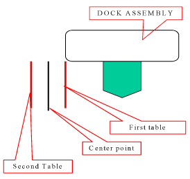

Operating Documentation
Direction 5670006, Rev# 1
Discovery MR750w GEM Service Methods
Module Version 4.0, Version Date 7/13/11
Operating Documentation |
| Required Persons | Preliminary Reqs | Procedure | Finalization |
|---|---|---|---|
| 1 | 2 hours |
This procedure is for the alignment of the two tables dedicated to one MR suite. You may need to adjust all four wheels on both tables.
| Item | Qty | Effectivity | Part# | Manufacturer | |
|---|---|---|---|---|---|
| Non-ferrous medium Slotted Head Screwdriver | 1 | - | - | - | |
| Non-ferrous medium Phillips Head Screwdriver | 1 | - | - | - | |
| Item | Qty | Effectivity | Part# | Manufacturer |
|---|---|---|---|---|
| Marking Tape - 12” (~ 300 mm) | 1 | - | - | - |
| ||||
| STRONG MAGNETIC FIELDS! | ||||
| FERROUS HAND TOOLS CAN BECOME DANGEROUS PROJECTILES IN THE VICINITY OF THE SYSTEM MAGNET. | ||||
| Do not use any magnetic/ferrous tools or equipment inside the magnet room. |
Drive the LPCA through the magnet to the end of the rear pedestal.
Undock the Patient Table and move to an open work area.
Remove all lower table covers from all Patient Tables adjusted in this procedure (see Patient Table Upper Bellows and Lower Base Side Cover Removal).
Confirm the following:
Bridge height: 582-585 mm.
Bridge centered left/right and in/out.
Bridge levelness (left/right, front/back).
| ||||
| Personnel INJURY or equipment damage! | ||||
| The Dock Contains Ferrous Materials and may be pulled into the magnet bore if securing hardware is removed. | ||||
| Only loosen the hardware sufficiently to perform adjustments in this procedure. ensure THE DOCK remains secured TO PREVENT IT FROM BEING PULLED INTO THE MAGNET BORE. |
At the rear of the dock loosen the top and bottom dock bracket nuts, two on each side.
Illustration 1: Dock Bracket Nuts

Get the table removed earlier (first table) and check table alignment/levelness with the bridge to ensure smooth travel. Adjust the height as needed using the Leveling Patient Table procedure.
Adjust left/right per Dock Centering and Dock Hook Tension Adjustment).
Undock the first table and get the second table.
Dock the second table and repeat Step 6 and Dock Hook Centering procedure of Step 7, but do not perform Dock Centering.
Mark the proper dock alignment (left/right) of the second table with a second piece of tape.
Mark the center point between the two marks.
Shift the dock to align with the center point mark.
Illustration 2: Marking the Center Point

Secure the dock by tightening the dock bracket nuts at the rear of the dock. See Illustration 1.
Dock each table and move the cradle into the bore and confirm smooth table travel.
If necessary, perform the Table Top Height Adjustment procedure.